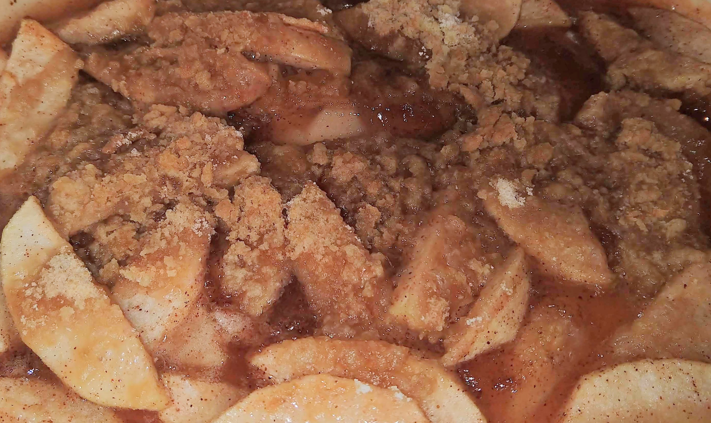

Country Apple Cobbler
2-3-2019
Country apple cobbler is one of my favorite dessert foods, and it is really simple to make. You can substitute the type of apple, or make it into the pie (put it into a pie crust and don't make the crumbs). It is best served with vanilla ice cream.
Ingredients
- Apple Filling
- 4 - 6 granny smith apples
- 1/2 tsp cinnamon
- 1/4 tsp nutmeg
- 1/8 tsp ground allspice
- 1 to 1 1/4 cup granulated sugar
- 3 tbsp flour
- A pinch of salt
- 2 tbsp lemon juice
- 2 tbsp butter
- Crumbs
- 3 tbsp butter
- 1/2 cup flour
- 1/2 cup brown sugar
Directions
- Preheat oven to 450
- Peel, core, and slice apples
- Coat apples in lemon juice in a large oven-safe baking pan
- Combine cinnamon, nutmeg, allspice, sugar, flour, and salt in a separate bowl
- Mix dry ingredients with the apples, making sure to evenly coat all apples
- Dot mixture with butter and mix
- Prepare the crumbs by combining butter, flour and brown sugar using a fork until crumbles form
- Pour crumbles on top of the apple mixture
- Bake at 450 for 10 minutes, then lower oven to 325 for 30 minutes